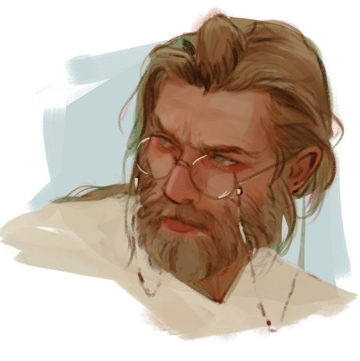
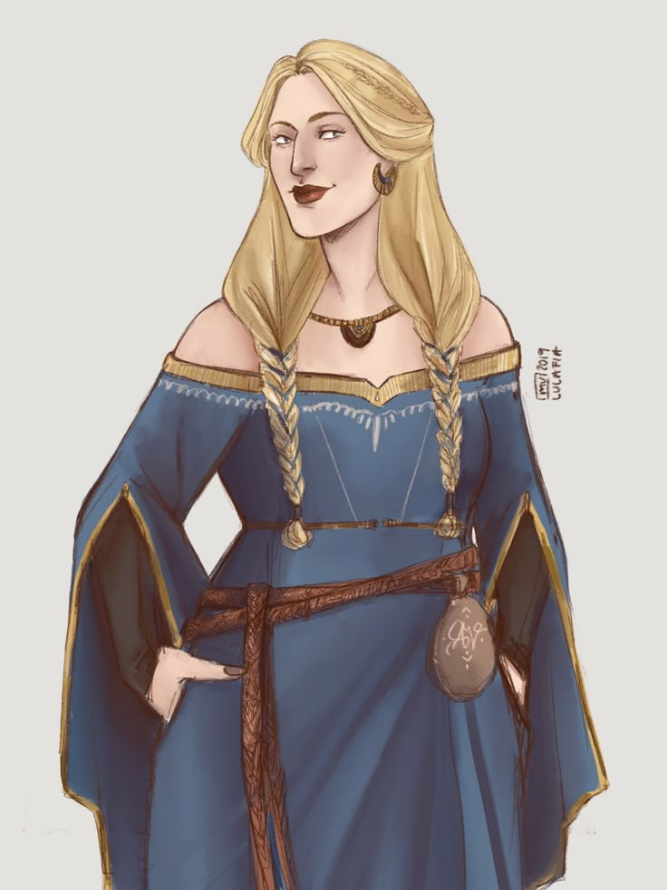
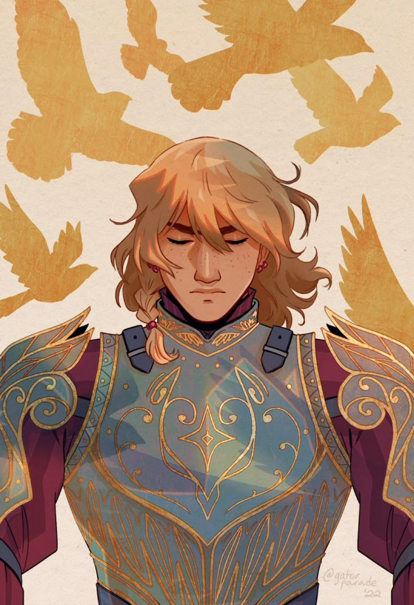
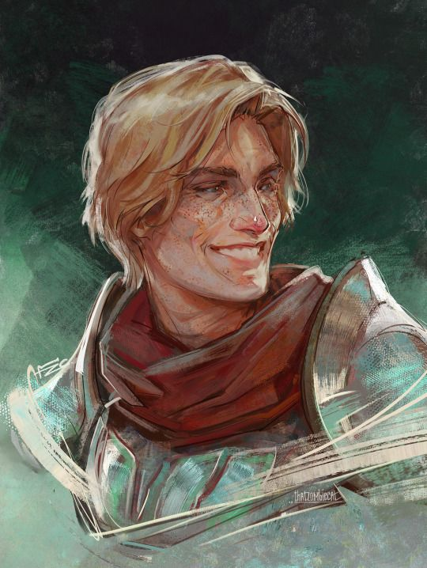
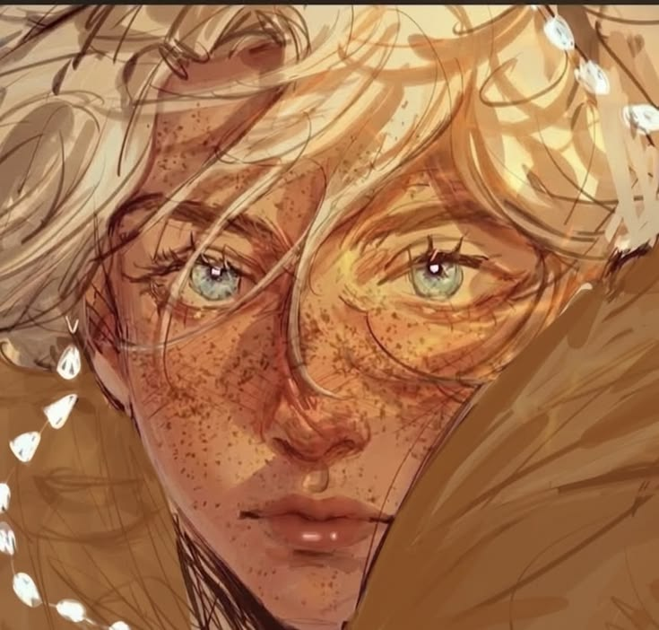

A Família Strix governa Perkad, também chamada de Pastorinho, a mais recente região fundada do Reino Polaris. Foram escolhidos pela Rainha Margarida por sua sagacidade e persistência, provadas pelo próspero negócio de grãos que ergueram com as próprias mãos.
✦ MARQUÊS E CONDESSA DE PERKAD

✦ família strix
Dalton Strix
Dalton Strix administra a vigilância sanitária e territorial de Perkad, com atenção redobrada à divisa com a Floresta Protegida — fronteira que exige cuidado constante para manter a região segura.

✦ família strix
Isabale Strix
Isabale Strix administra as propriedades e os produtos de Perkad, garantindo que a prosperidade erguida sobre o negócio de grãos da família continue sustentando toda a região.
✦ FILHOS

✦ família strix
Isobel Strix
Soldado da coroa, Isobel Strix comanda sua própria guarda real, zelando pela segurança de Perkad com a disciplina que herdou dos pais.

✦ família strix
Julian Strix
Julian Strix auxilia o irmão mais velho, Isobel, nas patrulhas de guarda, aprendendo de perto o ofício que um dia poderá assumir.

✦ família strix
Calestre Strix
A caçula da Família Strix ainda não carrega título algum por sua pouca idade. Enquanto isso, se dedica aos estudos na escola de Perkad.